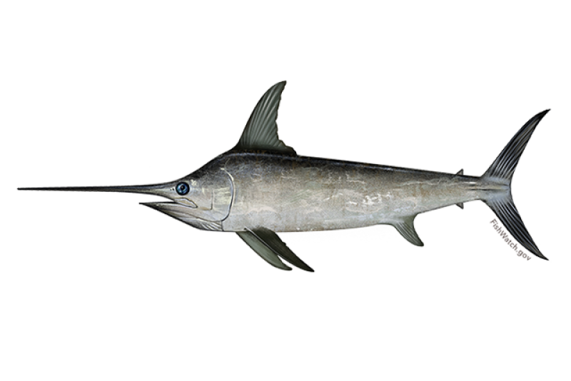

- SPECIES: Trout
- LENGTH: 19 inches
- NAME: Trevor
- HARVESTED FROM: Old Hickory Lake
- DIET: Fish hooks, aparently

- SPECIES: Swordfish
- LENGTH: 19 feet
- NAME: Stella
- HARVESTED FROM: Atlantic Ocean
- DIET: Any smaller saltwater fish
